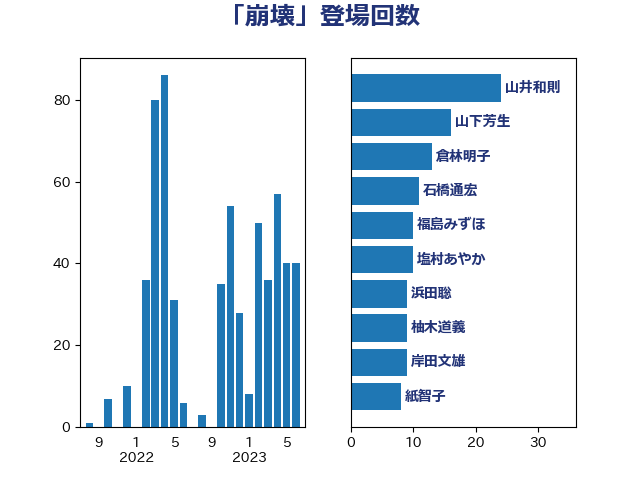

単語「崩壊」

| 山井和則 | 立憲民主党 | 24 回 |
| 山下芳生 | 日本共産党 | 16 回 |
| 倉林明子 | 日本共産党 | 13 回 |
| 石橋通宏 | 立憲民主党 | 11 回 |
| 福島みずほ | 社会民主党 | 10 回 |
| 塩村あやか | 立憲民主党 | 10 回 |
| 浜田聡 | NHK党 | 9 回 |
| 柚木道義 | 立憲民主党 | 9 回 |
| 岸田文雄 | 自由民主党 | 9 回 |
| 紙智子 | 日本共産党 | 8 回 |
| 穀田恵二 | 日本共産党 | 7 回 |
| 福島伸享 | 無所属 | 7 回 |
| 斉藤鉄夫 | 公明党 | 7 回 |
| 鈴木義弘 | 国民民主党 | 6 回 |
| 鈴木俊一 | 自由民主党 | 6 回 |
| 野間健 | 立憲民主党 | 6 回 |
| 田村貴昭 | 日本共産党 | 6 回 |
| 田村智子 | 日本共産党 | 6 回 |
| 西田昌司 | 自由民主党 | 5 回 |
| 萩生田光一 | 自由民主党 | 5 回 |
| 神谷宗幣 | 参政党 | 5 回 |
| 本村伸子 | 日本共産党 | 5 回 |
| 末松義規 | 立憲民主党 | 5 回 |
| 大口善徳 | 公明党 | 5 回 |
| 吉田はるみ | 立憲民主党 | 5 回 |
| 長友慎治 | 国民民主党 | 4 回 |
| 羽田次郎 | 立憲民主党 | 4 回 |
| 篠原豪 | 立憲民主党 | 4 回 |
| 浅田均 | 日本維新の会 | 4 回 |
| 池下卓 | 日本維新の会 | 4 回 |
| 梅村みずほ | 日本維新の会 | 4 回 |
| 杉尾秀哉 | 立憲民主党 | 4 回 |
| 斎藤アレックス | 国民民主党 | 4 回 |
| 岩渕友 | 日本共産党 | 4 回 |
| 小山展弘 | 立憲民主党 | 4 回 |
| 大河原まさこ | 立憲民主党 | 4 回 |
| 住吉寛紀 | 日本維新の会 | 4 回 |
| 上田英俊 | 自由民主党 | 4 回 |
| 高良鉄美 | 無所属 | 3 回 |
| 高木かおり | 日本維新の会 | 3 回 |
| 音喜多駿 | 日本維新の会 | 3 回 |
| 青柳仁士 | 日本維新の会 | 3 回 |
| 青山大人 | 立憲民主党 | 3 回 |
| 階猛 | 立憲民主党 | 3 回 |
| 重徳和彦 | 立憲民主党 | 3 回 |
| 足立康史 | 日本維新の会 | 3 回 |
| 舩後靖彦 | れいわ新選組 | 3 回 |
| 空本誠喜 | 日本維新の会 | 3 回 |
| 福田昭夫 | 立憲民主党 | 3 回 |
| 神津たけし | 立憲民主党 | 3 回 |
| 石井苗子 | 日本維新の会 | 3 回 |
| 日下正喜 | 公明党 | 3 回 |
| 宮本徹 | 日本共産党 | 3 回 |
| 太栄志 | 立憲民主党 | 3 回 |
| 和田政宗 | 自由民主党 | 3 回 |
| 吉良州司 | 無所属 | 3 回 |
| 伊藤信太郎 | 自由民主党 | 3 回 |
| 伊波洋一 | 無所属 | 3 回 |
| 齋藤健 | 自由民主党 | 2 回 |
| 野田国義 | 立憲民主党 | 2 回 |
| 赤嶺政賢 | 日本共産党 | 2 回 |
| 西村智奈美 | 立憲民主党 | 2 回 |
| 蓮舫 | 立憲民主党 | 2 回 |
| 羽生田俊 | 自由民主党 | 2 回 |
| 緒方林太郎 | 無所属 | 2 回 |
| 米山隆一 | 立憲民主党 | 2 回 |
| 石川大我 | 立憲民主党 | 2 回 |
| 片山さつき | 自由民主党 | 2 回 |
| 湯原俊二 | 立憲民主党 | 2 回 |
| 泉健太 | 立憲民主党 | 2 回 |
| 櫻井周 | 立憲民主党 | 2 回 |
| 榛葉賀津也 | 国民民主党 | 2 回 |
| 森山浩行 | 立憲民主党 | 2 回 |
| 徳永エリ | 立憲民主党 | 2 回 |
| 岬麻紀 | 日本維新の会 | 2 回 |
| 山田宏 | 自由民主党 | 2 回 |
| 山添拓 | 日本共産党 | 2 回 |
| 山下貴司 | 自由民主党 | 2 回 |
| 小西洋之 | 立憲民主党 | 2 回 |
| 宮崎政久 | 自由民主党 | 2 回 |
| 室井邦彦 | 日本維新の会 | 2 回 |
| 大塚耕平 | 国民民主党 | 2 回 |
| 塩田博昭 | 公明党 | 2 回 |
| 土田慎 | 自由民主党 | 2 回 |
| 吉田宣弘 | 公明党 | 2 回 |
| 吉田とも代 | 日本維新の会 | 2 回 |
| 北神圭朗 | 無所属 | 2 回 |
| 伊藤岳 | 日本共産党 | 2 回 |
| 一谷勇一郎 | 日本維新の会 | 2 回 |
| 高橋千鶴子 | 日本共産党 | 1 回 |
| 高村正大 | 自由民主党 | 1 回 |
| 高市早苗 | 自由民主党 | 1 回 |
| 須藤元気 | 無所属 | 1 回 |
| 青木愛 | 立憲民主党 | 1 回 |
| 青山繁晴 | 自由民主党 | 1 回 |
| 阿部司 | 日本維新の会 | 1 回 |
| 長浜博行 | 無所属 | 1 回 |
| 長妻昭 | 立憲民主党 | 1 回 |
| 鎌田さゆり | 立憲民主党 | 1 回 |
| 金村龍那 | 日本維新の会 | 1 回 |
| 金子恵美 | 立憲民主党 | 1 回 |
| 遠藤良太 | 日本維新の会 | 1 回 |
| 逢坂誠二 | 立憲民主党 | 1 回 |
| 近藤和也 | 立憲民主党 | 1 回 |
| 谷合正明 | 公明党 | 1 回 |
| 菊田真紀子 | 立憲民主党 | 1 回 |
| 荒井優 | 立憲民主党 | 1 回 |
| 茂木敏充 | 自由民主党 | 1 回 |
| 竹詰仁 | 国民民主党 | 1 回 |
| 石川香織 | 立憲民主党 | 1 回 |
| 石井章 | 日本維新の会 | 1 回 |
| 矢倉克夫 | 公明党 | 1 回 |
| 田村まみ | 国民民主党 | 1 回 |
| 田中昌史 | 自由民主党 | 1 回 |
| 田中健 | 国民民主党 | 1 回 |
| 玄葉光一郎 | 立憲民主党 | 1 回 |
| 牧野たかお | 自由民主党 | 1 回 |
| 渡辺周 | 立憲民主党 | 1 回 |
| 清水貴之 | 日本維新の会 | 1 回 |
| 浜野喜史 | 国民民主党 | 1 回 |
| 泉田裕彦 | 自由民主党 | 1 回 |
| 河西宏一 | 公明党 | 1 回 |
| 沢田良 | 日本維新の会 | 1 回 |
| 江田憲司 | 立憲民主党 | 1 回 |
| 水岡俊一 | 立憲民主党 | 1 回 |
| 櫛渕万里 | れいわ新選組 | 1 回 |
| 横山信一 | 公明党 | 1 回 |
| 森田俊和 | 立憲民主党 | 1 回 |
| 森本真治 | 立憲民主党 | 1 回 |
| 森屋隆 | 立憲民主党 | 1 回 |
| 梅谷守 | 立憲民主党 | 1 回 |
| 柿沢未途 | 無所属 | 1 回 |
| 柴田巧 | 日本維新の会 | 1 回 |
| 柴愼一 | 立憲民主党 | 1 回 |
| 枝野幸男 | 立憲民主党 | 1 回 |
| 林芳正 | 自由民主党 | 1 回 |
| 松本尚 | 自由民主党 | 1 回 |
| 東国幹 | 自由民主党 | 1 回 |
| 杉本和巳 | 日本維新の会 | 1 回 |
| 本庄知史 | 立憲民主党 | 1 回 |
| 木原誠二 | 自由民主党 | 1 回 |
| 早坂敦 | 日本維新の会 | 1 回 |
| 打越さく良 | 立憲民主党 | 1 回 |
| 志位和夫 | 日本共産党 | 1 回 |
| 後藤茂之 | 自由民主党 | 1 回 |
| 平木大作 | 公明党 | 1 回 |
| 市村浩一郎 | 日本維新の会 | 1 回 |
| 岡田直樹 | 自由民主党 | 1 回 |
| 岡本あき子 | 立憲民主党 | 1 回 |
| 山際大志郎 | 自由民主党 | 1 回 |
| 山谷えり子 | 自由民主党 | 1 回 |
| 山田俊男 | 自由民主党 | 1 回 |
| 山本太郎 | れいわ新選組 | 1 回 |
| 山本佐知子 | 自由民主党 | 1 回 |
| 山崎誠 | 立憲民主党 | 1 回 |
| 山口壯 | 自由民主党 | 1 回 |
| 小沢雅仁 | 立憲民主党 | 1 回 |
| 小池晃 | 日本共産党 | 1 回 |
| 小林一大 | 自由民主党 | 1 回 |
| 小川淳也 | 立憲民主党 | 1 回 |
| 小寺裕雄 | 自由民主党 | 1 回 |
| 小宮山泰子 | 立憲民主党 | 1 回 |
| 寺田静 | 無所属 | 1 回 |
| 宮本岳志 | 日本共産党 | 1 回 |
| 宗清皇一 | 自由民主党 | 1 回 |
| 大西健介 | 立憲民主党 | 1 回 |
| 大石あきこ | れいわ新選組 | 1 回 |
| 大島敦 | 立憲民主党 | 1 回 |
| 大家敏志 | 自由民主党 | 1 回 |
| 堤かなめ | 立憲民主党 | 1 回 |
| 堂込麻紀子 | 無所属 | 1 回 |
| 堀井巌 | 自由民主党 | 1 回 |
| 土井亨 | 自由民主党 | 1 回 |
| 吉田統彦 | 立憲民主党 | 1 回 |
| 吉田久美子 | 公明党 | 1 回 |
| 古川禎久 | 自由民主党 | 1 回 |
| 古川元久 | 国民民主党 | 1 回 |
| 古屋範子 | 公明党 | 1 回 |
| 友納理緒 | 自由民主党 | 1 回 |
| 原口一博 | 立憲民主党 | 1 回 |
| 北村経夫 | 自由民主党 | 1 回 |
| 勝部賢志 | 立憲民主党 | 1 回 |
| 伴野豊 | 立憲民主党 | 1 回 |
| 伊東信久 | 日本維新の会 | 1 回 |
| 伊佐進一 | 公明党 | 1 回 |
| 仁比聡平 | 日本共産党 | 1 回 |
| 井上哲士 | 日本共産党 | 1 回 |
| 中野洋昌 | 公明党 | 1 回 |
| 中根一幸 | 自由民主党 | 1 回 |
| 中川正春 | 立憲民主党 | 1 回 |
| 中川宏昌 | 公明党 | 1 回 |
| 世耕弘成 | 自由民主党 | 1 回 |
| 下村博文 | 自由民主党 | 1 回 |
| 上田勇 | 公明党 | 1 回 |